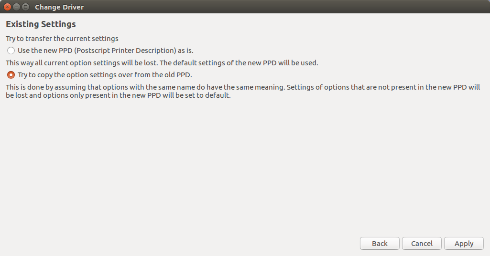

Ubuntu 16.04 and the Brother HL-2140 Printer
Introduction
I (relatively) recently bought a ZaReason Limbo Desktop PC which comes with Ubuntu 16.04. I'm debating whether to update it to 16.10, given that updating broke the USB WiFi adapter I had on my older computer (the USB is recognized but not the WiFi adapter), but, in any case, I wanted to print something using my new computer today and ran into the same problem that I had when I updated my old computer to Ubuntu 14.10 - the default printer driver printed out a bunch of blank pages rather than the page I wanted to print. The last time I solved it by choosing a different model (the HL-2142) but this time out I found a stack overflow post that suggested using the Brother HL-2140 Foomatic/hl1250 [en] driver instead. I tried it and it worked for me, so here goes.
How To Choose the Correct Printer Driver
First, open Dash (the windows-key launches it on my keyboard), type in Printers and click on the icon.

This brings up the printers dialog.

Double-click on the HL-2140-series icon to bring up the Printer Properties dialog.

Click on the Make and Model "Change" button (the fourth row). Let the program find the drivers and it will bring up the Choose Driver dialog.

Use the Brother (recommended) option (it should already be selected) and click on the "Forward" button. This brings up the Change Driver dialog with the postscript driver chosen (which is the one that does not work for me).

Select the hl1250 driver (by clicking on it) and click on the "Forward" button.

This will bring up the Existing Settings dialog. I've tried different options and haven't noticed a difference so I just leave it at whatever the default option is and click "Apply".

At this point your driver should be updated so click on the "OK" button.

If your experience is the same as mine, you will be able to print your documents at this point.
Conclusion
The basic method to get the Brother HL-2140 to print in Ubuntu 16.04 is to select the hl1250 driver instead of the default. Since I only do this when I need to set up a new computer, I alway have to do some googling to remember what to do, so hopefully this will help me save some searching if I ever have to do this again.